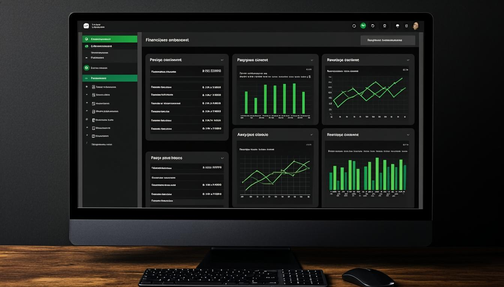

Chapitre 1
Introduction
Bienvenue dans le manuel d'utilisation de JurisLink pour le profil Comptable. En tant que comptable, votre rôle est centré sur la gestion financière du cabinet : facturation, paiements, temps passés et rapports financiers. Vous disposez également d'un accès complet aux documents et pouvez consulter les dossiers et les clients en lecture seule.
Résumé de vos capacités :
✓DossiersConsultation uniquement. Accès limité aux informations des dossiers.
✓ClientsConsultation et export. Accès aux informations clients pour la facturation.
✓DocumentsConsultation, création, modification et export. Gestion des justificatifs et pièces comptables.
✓FacturesAccès complet : consultation, création, modification et export.
✓Paiements & Temps passésAccès complet : consultation, création, modification et export.
✓RapportsConsultation, création et export. Génération des rapports financiers.
Restrictions importantes
Vous n'avez pas accès à : l'agenda et les événements, la messagerie, les notifications, la gestion des utilisateurs, les paramètres du cabinet et l'audit. Vous ne pouvez pas créer ni modifier des dossiers ou des tâches.
Chapitre 2
Premiers pas
Connexion à l'application
1Accéder à l'écran de connexionLancez JurisLink depuis votre navigateur. L'écran de connexion s'affiche avec les champs Identifiant et Mot de passe.
2Saisir vos identifiantsEntrez votre identifiant professionnel et votre mot de passe fournis par l'administrateur du cabinet.
3Valider la connexionCliquez sur « Se connecter ». Vous accédez au tableau de bord Comptable.
Présentation du tableau de bord
Le tableau de bord Comptable affiche les indicateurs financiers clés : chiffre d'affaires du mois, factures en attente de paiement, factures en retard, total des temps passés non facturés et résumé des paiements récents.

Figure 1 — Tableau de bord du Comptable
Navigation dans le menu latéral
Le menu latéral affiche : Dossiers (lecture seule), Clients, Documents, Factures, Temps passés, Paiements et Rapports. Les sections Agenda, Messages, Utilisateurs et Paramètres ne sont pas visibles.